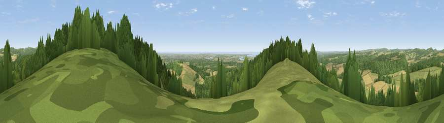

Viewpoint near Stoughton
#2566 in England · top 6% of its area beats it · near StoughtonThe view, rendered

A 360° render of this exact spot computed from the terrain model, tree cover and land cover — summer colours, afternoon light, calibrated against photographs of famous viewpoints. Real trees, hedges and buildings will differ in detail.
The panorama
Grey silhouette: terrain skyline in each direction (720 bearings, Earth curvature and refraction included). Dashed green: skyline with trees (+15 m) and buildings (+8 m) as obstacles. Blue strip: how far the ground is visible on each bearing.
Where the view opens
Wedge length = distance to the farthest visible ground on that bearing (vegetation-aware). Rings at 10, 25 and 50 km.
What fills the view
49% woodland · 24% grassland · 23% cropland · 3% water · 2% built-up
Angular shares of the visible panorama (visual magnitude), not map area. Landscape diversity 0.53 (0–1 Shannon).
Key numbers
More beautiful places nearby
The staircase of upgrades: each row has a higher view potential than everything closer. Driving times are estimates from straight-line distance, calibrated against real road routing — check an actual route before setting out.
| Place | Direction | Drive | Score |
|---|---|---|---|
| Viewpoint near Stoughton | ESE · 0 km | ~2 min | 79.5 |
| The Trundle | E · 6 km | ~12 min | 82.2 |
| Linch Down | NNE · 7 km | ~14 min | 85.2 |
| Beacon Hill | N · 7 km | ~15 min | 85.8 |
| Chanctonbury Ring | E · 32 km | ~49 min | 87.0 |
| Viewpoint near St. Lawrence | SW · 44 km | ~64 min | 88.2 |
| Viewpoint near Niton | SW · 48 km | ~69 min | 89.2 |
| Viewpoint near West Bexington | W · 129 km | ~153 min | 89.5 |
50.89379, -0.83474 · source: screening · position refined by local search. Computed location — check access rights before visiting.